SCUT-FBP - Regression
Regression was performed with the SCUT-FBP dataset, scores range from 0 to 5. The results for Mean Squared Error (MSE), Mean Absolute Error (MAE), Root Mean Squared Error (RMSE), and R-Squared (R2) are shown below for both male and female subsets.
SCUT-FBP
Females
MSE
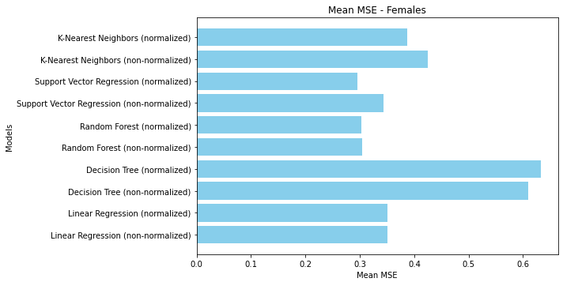In the mean squared error (MSE) comparison for female attractiveness prediction, the Random Forest model, both normalized and non-normalized, achieves the lowest MSE, indicating superior performance in minimizing the prediction error. The Support Vector Regression (SVR) models follow closely, with normalization slightly improving their performance. K-Nearest Neighbors (KNN) also shows good performance, with normalized KNN outperforming its non-normalized counterpart. Linear Regression models, while performing reasonably well, are outperformed by the other models. The Decision Tree models exhibit the highest MSE, even with normalization, suggesting that they struggle significantly with this regression task. Overall, normalization tends to improve model performance across the board, with Random Forest and SVR standing out as the most effective models for predicting female attractiveness levels.
MAE
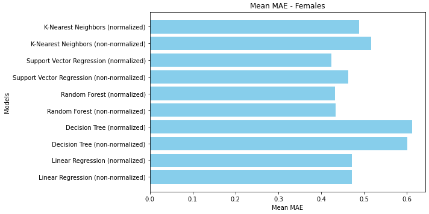In the mean absolute error (MAE) comparison for female attractiveness prediction, the Random Forest models, both normalized and non-normalized, achieve the lowest MAE, indicating their superior performance in minimizing prediction errors. The Support Vector Regression (SVR) models follow closely, with normalization slightly enhancing their performance. The K-Nearest Neighbors (KNN) models also show good performance, with the normalized version performing better than the non-normalized one. Linear Regression models exhibit reasonable performance but are outperformed by Random Forest and SVR. The Decision Tree models display the highest MAE, even with normalization, suggesting they are less effective in this regression task. Overall, normalization generally improves the models' performance, with Random Forest and SVR being the most reliable for predicting female attractiveness levels.
RMSE
In the mean root mean square error (RMSE) comparison for female attractiveness prediction, the Random Forest models, both normalized and non-normalized, achieve the lowest RMSE, indicating their effectiveness in reducing prediction errors. The Support Vector Regression (SVR) models also perform well, with normalization slightly improving their results. K-Nearest Neighbors (KNN) models show similar performance, with the normalized version having a slight edge. Linear Regression models, while reasonably effective, are outperformed by Random Forest and SVR. The Decision Tree models exhibit the highest RMSE, even with normalization, suggesting they struggle significantly with this regression task. Overall, normalization generally enhances model performance, with Random Forest and SVR models being the most effective for predicting female attractiveness levels.
R-Squared
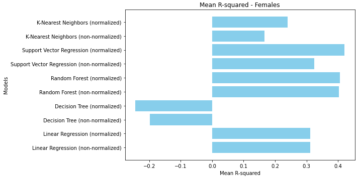In the mean R-squared comparison for female attractiveness prediction, the Random Forest models, both normalized and non-normalized, achieve the highest R-squared values, indicating they explain the most variance in the data. The Support Vector Regression (SVR) models follow closely, with normalization slightly enhancing their performance. The K-Nearest Neighbors (KNN) models also perform reasonably well, with the normalized version showing better results. Linear Regression models demonstrate moderate performance, outperforming Decision Tree models. The Decision Tree models exhibit the lowest R-squared values, with both normalized and non-normalized versions showing negative values, indicating poor model fit. These results highlight the importance of normalization and the effectiveness of Random Forest and SVR models in explaining the variance in female attractiveness levels.
Males
MSE
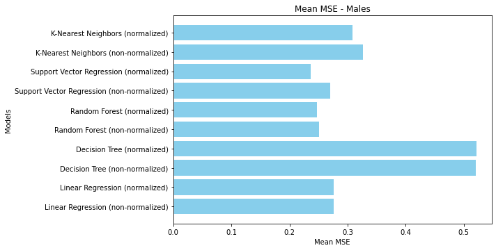The mean squared error (MSE) comparison shows that the Random Forest models, both normalized and non-normalized, achieve the lowest MSE, similar to the female dataset. This indicates their effectiveness in minimizing prediction error. The Support Vector Regression (SVR) models also perform well, with normalization providing a slight advantage. K-Nearest Neighbors (KNN) shows a notable difference, with the normalized version outperforming the non-normalized one. Linear Regression models demonstrate reasonable performance but are outperformed by Random Forest and SVR. The Decision Tree models, as seen with the female dataset, exhibit the highest MSE, indicating poor performance in this regression task. These results emphasize the importance of normalization in enhancing model accuracy, with Random Forest and SVR models being the most reliable for predicting male attractiveness levels.
MAE
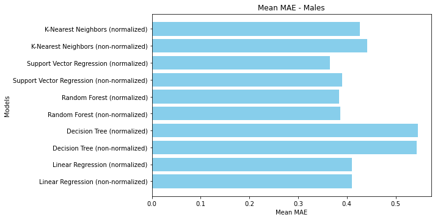The mean absolute error (MAE) comparison shows that the Random Forest models, both normalized and non-normalized, have the lowest MAE, similar to the results for females. This highlights their effectiveness in minimizing prediction errors. The Support Vector Regression (SVR) models also perform well, with normalization providing a slight advantage. The K-Nearest Neighbors (KNN) models demonstrate improved performance with normalization but still fall behind Random Forest and SVR. Linear Regression models show reasonable performance, though they are outperformed by Random Forest and SVR. The Decision Tree models, as seen with the female dataset, exhibit the highest MAE, indicating poor performance in this regression task. These findings shows the importance of normalization in enhancing model accuracy, with RF and SVR models being particularly effective for predicting attractiveness levels.
RMSE
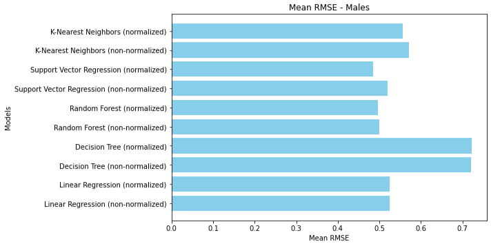The mean root mean square error (RMSE) comparison reveals that the Random Forest models, both normalized and non-normalized, achieve the lowest RMSE. This underscores their robustness in minimizing prediction errors. The Support Vector Regression (SVR) models also show strong performance, with normalization providing a slight improvement. K-Nearest Neighbors (KNN) models demonstrate similar performance, with the normalized version outperforming the non-normalized one. Linear Regression models, while reasonably effective, are outperformed by Random Forest and SVR. The Decision Tree models, consistent with the female dataset results, exhibit the highest RMSE, indicating poor performance in this regression task. These findings highlight the Random Forest and SVR models being particularly effective for predicting male attractiveness levels.
R-Squared
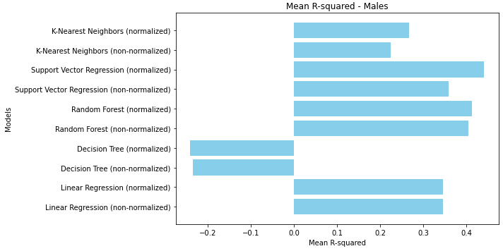For male attractiveness prediction, the mean R-squared comparison shows similar trends, with the Random Forest models, both normalized and non-normalized, achieving the highest R-squared values. This underscores their robustness in explaining the variance in the data. The Support Vector Regression (SVR) models also perform well, with normalization providing a slight advantage. The K-Nearest Neighbors (KNN) models demonstrate reasonable performance, with the normalized version outperforming the non-normalized one. Linear Regression models show moderate performance, but they are more effective than Decision Tree models. The Decision Tree models exhibit the lowest R-squared values, indicating a poor fit for this regression task. These findings emphasize the importance of normalization and the superior performance of Random Forest and SVR models in explaining the variance in male attractiveness levels.
In the regression analysis of the SCUT dataset for attractiveness levels ranging from 0 to 5, the Random Forest models consistently performed the best across all metrics (MSE, MAE, RMSE, and R-squared) for both males and females, with normalization slightly enhancing their performance. The Support Vector Regression (SVR) models also showed strong performance, particularly when normalized. K-Nearest Neighbors (KNN) models benefited significantly from normalization but still lagged behind Random Forest and SVR. Linear Regression models demonstrated moderate performance, generally better than Decision Tree models, which performed the worst across all metrics. The Decision Tree models, even with normalization, struggled significantly, often showing the highest errors and lowest R-squared values. Comparing genders, the regression models performed similarly for both males and females, with no significant difference in performance. Normalization generally improved the models' accuracy and reliability. MSE and RMSE provide insights into the average magnitude of errors, with lower values indicating better model performance. MAE reflects the average absolute error, giving a sense of overall prediction accuracy, while R-squared indicates how well the model explains the variance in the data. Given the performance metrics, the models, particularly Random Forest and SVR, show reasonable success in predicting attractiveness levels.
MeBeauty - Regression
Regression was performed with the MeBeauty dataset, scores range from 0 to 10. The results for Mean Squared Error (MSE), Mean Absolute Error (MAE), Root Mean Squared Error (RMSE), and R-Squared (R2) are shown below for both male and female subsets.
MeBeauty
Females
MSE
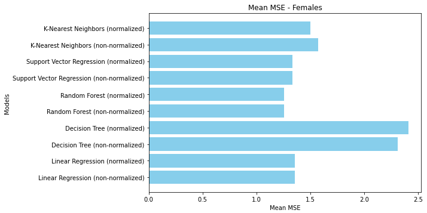In the mean squared error (MSE) comparison for female attractiveness prediction, the Random Forest models, both normalized and non-normalized, achieve the lowest MSE, indicating their effectiveness in minimizing prediction errors. The Support Vector Regression (SVR) models follow closely, with normalization slightly improving their performance. K-Nearest Neighbors (KNN) models also show good performance, with the normalized version slightly outperforming the non-normalized one. Linear Regression models exhibit moderate performance but are outperformed by Random Forest and SVR. The Decision Tree models display the highest MSE, even with normalization, suggesting they struggle significantly with this regression task. Overall, normalization generally enhances model performance, with Random Forest and SVR being the most effective for predicting female attractiveness levels in this dataset.
MAE
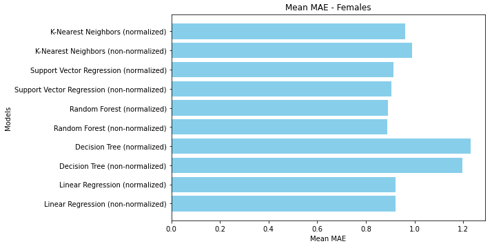In the mean absolute error (MAE) comparison for female attractiveness prediction, the Random Forest models, both normalized and non-normalized, achieve the lowest MAE, indicating their effectiveness in minimizing prediction errors. The Support Vector Regression (SVR) models also perform well, with normalization slightly improving their results. The K-Nearest Neighbors (KNN) models show similar performance, with the normalized version outperforming the non-normalized one. Linear Regression models exhibit moderate performance, while the Decision Tree models display the highest MAE, even with normalization, suggesting they struggle significantly with this regression task. Overall, normalization generally enhances model performance, with Random Forest and SVR being the most effective for predicting female attractiveness levels in this dataset.
RMSE
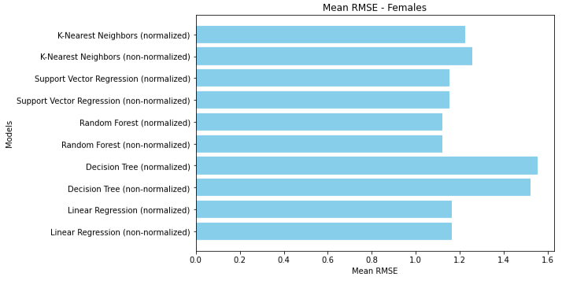In the mean root mean square error (RMSE) comparison for female attractiveness prediction, the Random Forest models, both normalized and non-normalized, achieve the lowest RMSE, indicating their effectiveness in reducing prediction errors. The Support Vector Regression (SVR) models also perform well, with normalization slightly improving their results. The K-Nearest Neighbors (KNN) models show similar performance, with the normalized version slightly outperforming the non-normalized one. Linear Regression models exhibit moderate performance but are outperformed by Random Forest and SVR. The Decision Tree models display the highest RMSE, even with normalization, suggesting they struggle significantly with this regression task. Overall, normalization generally enhances model performance, with Random Forest and SVR being the most effective for predicting female attractiveness levels in this dataset.
R-Squared
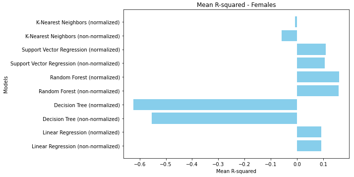In the mean R-squared comparison for female attractiveness prediction, the Random Forest models, both normalized and non-normalized, achieve the highest R-squared values, indicating they explain the most variance in the data. However, the R-squared values are still relatively low, suggesting that while these models perform better than others, there is still significant room for improvement. The Support Vector Regression (SVR) models follow, with normalization slightly enhancing their performance. K-Nearest Neighbors (KNN) models perform poorly, with the non-normalized version showing negative R-squared values, indicating a poor fit. Linear Regression models demonstrate moderate performance, but the Decision Tree models show the worst performance with highly negative R-squared values, indicating they fail to capture the data's variance adequately. Overall, normalization generally improves model performance, with Random Forest and SVR models being the most effective, though not highly successful.
Males
MSE
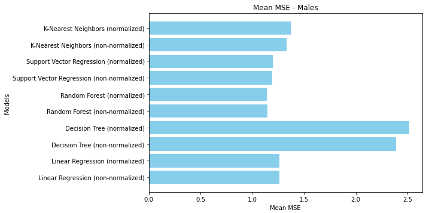The mean squared error (MSE) comparison reveals that the Random Forest models, both normalized and non-normalized, achieve the lowest MSE, similar to the female dataset. This highlights their robustness in minimizing prediction errors. The Support Vector Regression (SVR) models also perform well, with normalization providing a slight advantage. K-Nearest Neighbors (KNN) models demonstrate improved performance with normalization but still fall behind Random Forest and SVR. Linear Regression models show moderate performance but are outperformed by Random Forest and SVR. The Decision Tree models, consistent with the female dataset results, exhibit the highest MSE, indicating poor performance in this regression task. Overall, normalization generally enhances model performance, with Random Forest and SVR models being particularly effective for predicting male attractiveness levels in this dataset.
MAE
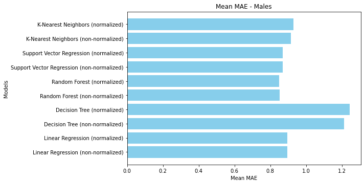The mean absolute error (MAE) comparison reveals that the Random Forest models, both normalized and non-normalized, have the lowest MAE, similar to the results for females. This underscores their robustness in minimizing prediction errors. The Support Vector Regression (SVR) models also perform well, with normalization providing a slight improvement. The K-Nearest Neighbors (KNN) models demonstrate improved performance with normalization but still fall behind Random Forest and SVR. Linear Regression models show moderate performance, while the Decision Tree models, consistent with the female dataset results, exhibit the highest MAE, indicating poor performance in this regression task. These findings emphasize the importance of normalization in enhancing model accuracy, with Random Forest and SVR models being particularly effective for predicting male attractiveness levels in this dataset.
RMSE
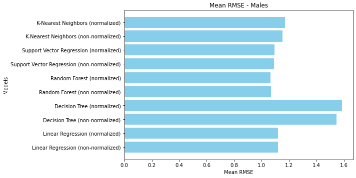The mean root mean square error (RMSE) comparison reveals that the Random Forest models, both normalized and non-normalized, achieve the lowest RMSE, similar to the results for females. This underscores their robustness in minimizing prediction errors. The Support Vector Regression (SVR) models also perform well, with normalization providing a slight improvement. The K-Nearest Neighbors (KNN) models demonstrate improved performance with normalization but still fall behind Random Forest and SVR. Linear Regression models show moderate performance, while the Decision Tree models, consistent with the female dataset results, exhibit the highest RMSE, indicating poor performance in this regression task. Overall, normalization generally enhances model performance, with Random Forest and SVR models being particularly effective for predicting male attractiveness levels in this dataset.
R-Squared
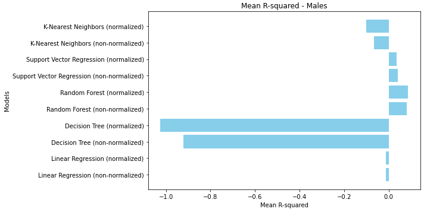For male attractiveness prediction, the mean R-squared comparison shows similar trends, with the Random Forest models, both normalized and non-normalized, achieving the highest R-squared values. Despite being the best performers, their R-squared values are still low, indicating that the models do not explain a significant portion of the variance in the data. The Support Vector Regression (SVR) models also show low R-squared values, with normalization providing a slight improvement. The K-Nearest Neighbors (KNN) models and Linear Regression models perform poorly, with KNN showing negative R-squared values. The Decision Tree models exhibit the worst performance, with highly negative R-squared values, indicating they fail to fit the data effectively. These findings underscore the importance of normalization and highlight that while Random Forest and SVR models are the most effective, there is considerable room for improvement in explaining the variance in male attractiveness levels.
In the regression analysis of the MeBeauty dataset, which ranges from 0 to 10 in attractiveness levels, the Random Forest models consistently performed the best across all metrics (MSE, MAE, RMSE, and R-squared) for both males and females, with normalization slightly enhancing their performance. The Support Vector Regression (SVR) models also demonstrated strong performance, particularly when normalized. The K-Nearest Neighbors (KNN) models benefited from normalization but still underperformed compared to Random Forest and SVR. Linear Regression models showed moderate performance, while the Decision Tree models performed the worst across all metrics, even with normalization. Comparing genders, both male and female datasets showed similar trends, with no significant difference in performance. Normalization generally improved model performance. MSE and RMSE indicate the average magnitude of prediction errors, with lower values signifying better performance. MAE provides a sense of overall prediction accuracy, while R-squared measures how well the model explains the variance in the data. Given the relatively low R-squared values, even for the best-performing models, it indicates that while Random Forest and SVR models are relatively effective, they still do not explain a significant portion of the variance, suggesting room for improvement. The overall performance suggests that these models provide a baseline for attractiveness prediction but further optimization is needed for higher accuracy and better model fit.